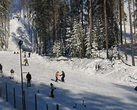
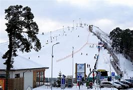
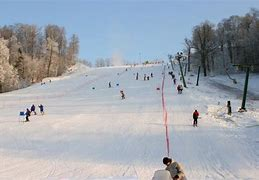
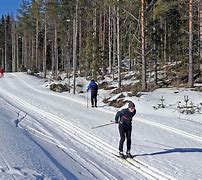
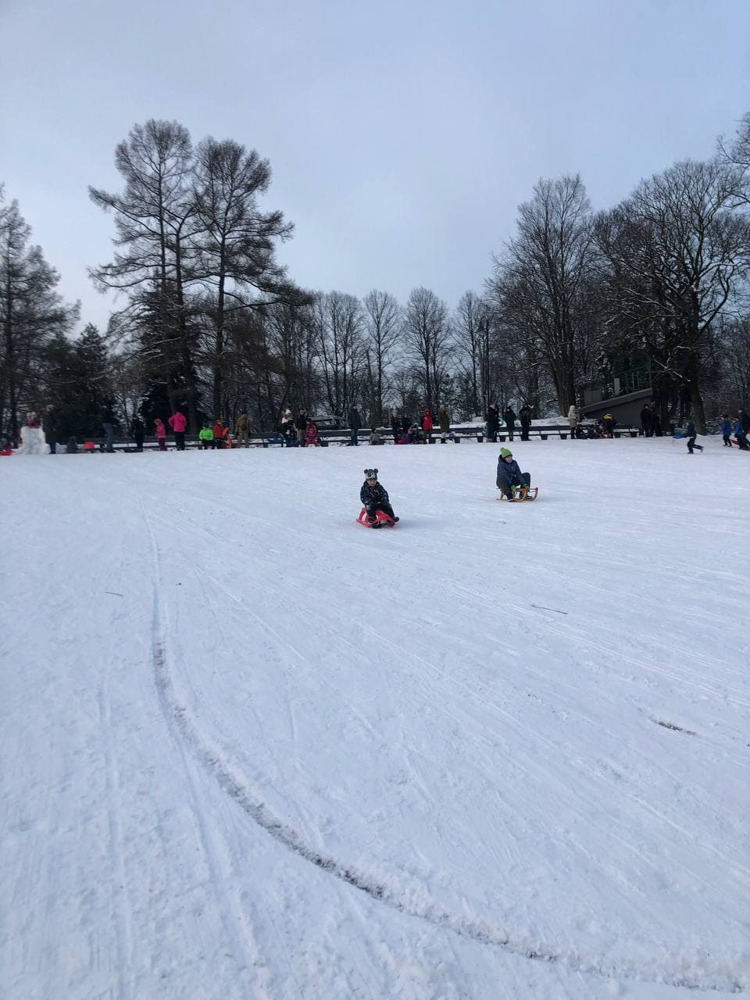

Dotajā tabulā būs pieejamas populārākās ziemas aktivitāšu vietas
| Atpūtas vieta | Apraksts |
|---|---|
| 
Riekstukalns | Riekstukalns atrodas pavisam netālu no Rīgas, apmēram 30 minūšu attālumā, tāpēc ziemas priekus vari baudīt ne tikai nedēļas nogalēs, bet arī darba dienas vakaros. Riekstukalna sākotnējais galvenais pakalpojums bija kalnu slēpošana un snovbords, taču izveidota arī distanču slēpošanas trase, kas vilina krietni daudz slēpotājus. |
| 
Lemberga Hūte | Ziemā kalns iepriecina slēpotājus un snovbordistus, kuriem izveidots īpašs snovborda parks un kalnu slēpošanas trase. Trases ir apgaismotas. Tiem, kas slēpojot vēl nejūtas īsti droši, palīdzēs prasmīgi slēpošanas instruktori. Kalna pakājē darbojas arī kalnu slēpošanas un snovborda inventāra noma. Līksmus brīžus sagādā arī kameršļūkšanas trase un bērnu trase nobraucieniem ar ragaviņām. |
| 
Siguldas Pilsētas trase | Siguldas Pilsētas trase ir moderna vide ziemas sporta cienītājiem: gan aktīvā dzīvesveida piekritējiem, gan profesionālajiem sportisiem, gan atpūtniekiem. Šeit varēsiet baudīt ērtus pacēlājus, mūsdienīgu inventāru un labu apgaismojumu. Apmeklētāju ērtībām un labsajūtai ir ierīkota bezmaksas autostāvvieta. |
| 
Distanču slēpošana Rīgā | Distanču slēpošanas iespējas Latvijā ir daudzveidīgas, un ziemas priekus uz slēpēm var baudīt vairāk nekā 50 trasēs. Pēc darba dienām, kas pavadītas pie datoriem, ķermenis kliedz pēc kustības un svaiga gaisa. Vakaros izbrauciens ar distanču slēpēm ir tieši laikā! |
| 
Grīziņkalns | Dodies baudīt sniegotās ziemas priekus stāvo pauguru nogāzēs. Tver elpu aizraujošas sajūtas, prieka hormona lādiņu un adrenalīna devu, slēpojot vai snovbordojot. Savukārt darba dienas vakaros atslēdzies no ikdienas steigas svaigā gaisā, baudot izbraucienu ar distanču slēpēm kāda no iemīļotajām trasēm. Piesaki savlaicīgi sev vēlamo slēpošanas laiku! |